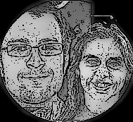

JEDI: Justice, Equity, Diversity & Inclusion coordinator: Sara Bonito, INAF - Osservatorio Astronomico di Palermo
Distance Scales coordinators: Marcella Marconi, INAF - Osservatorio Astronomico di Capodimonte Lovro Palaversa, Ruđer Bošković Institute 